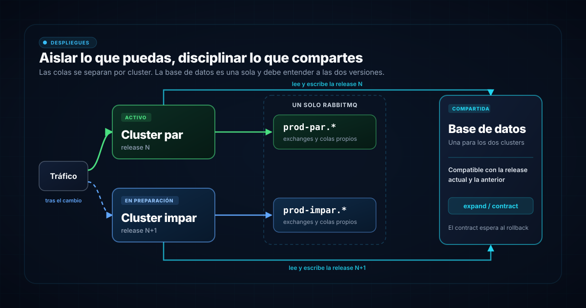

Dos clusters y un interruptor
Tienes un servicio backend en producción y una versión nueva lista para salir. En un despliegue blue-green mantienes dos clusters de producción idénticos: uno atiende a los usuarios y el otro recibe la release, donde se prueba con la infraestructura real antes de mover el tráfico. Nosotros los llamamos par e impar y se turnan: el que hoy está activo es mañana el que recibe la siguiente release.
Si algo falla tras el cambio, el tráfico vuelve al cluster anterior, que sigue ahí. Con servicios sin estado es casi tan sencillo como suena. El problema aparece al mirar qué comparten los dos clusters: el broker de mensajería y la base de datos. Durante el cambio, y mientras el rollback siga abierto, dos versiones distintas del código conviven sobre los mismos datos. Martin Fowler ya señalaba las bases de datos como uno de los retos principales de este patrón.
La mensajería se aísla
Lo que más asusta es la mensajería. La versión nueva publica un evento con otro formato y el consumidor de la versión anterior tiene que entenderlo, o al revés. Se puede resolver con eventos versionados, consumidores tolerantes a campos desconocidos y despliegues ordenados entre servicios. Funciona, pero exige disciplina en cada cambio de contrato. Y el fallo es traicionero: el consumidor antiguo recibe un mensaje que no sabe leer, lo rechaza o lo descarta, y el problema aparece en producción y no en las pruebas.
Nosotros lo evitamos con la topología. El RabbitMQ es el mismo para los dos clusters, pero los exchanges y las colas llevan un prefijo con el entorno y el cluster, por ejemplo prod-par.* y prod-impar.*. Cada cluster publica en sus exchanges y consume de sus colas, así que un mensaje producido por la versión N solo lo consume la versión N. Los contratos de los eventos no cruzan la frontera entre versiones.
El cambio de tráfico queda limpio. Cuando el cluster nuevo pasa a ser el activo, el saliente mantiene sus consumidores hasta drenar sus colas y solo entonces se apaga. Y como conserva sus propias colas, volver a él tampoco mezcla versiones. El precio es duplicar la topología: dos juegos de exchanges y colas por servicio.
La base de datos no se duplica
Con la mensajería aislada queda una pieza que los dos clusters comparten de verdad: la base de datos. Tener una por cluster obligaría a mantenerlas sincronizadas, y Fowler advierte de las transacciones que se pierden si no se hace. Así que hay una sola, con dos versiones del código vivas durante la ventana de cambio y de rollback. Y la compatibilidad tiene que ir en las dos direcciones: la versión nueva debe entender los datos que dejó la anterior y la anterior debe entender lo que escribe la nueva, porque si hay que volver atrás será ella la que lea.
La consecuencia es una regla: cada cambio de esquema tiene que funcionar con la versión que está en producción y con la que viene detrás. Fowler lo plantea separando el despliegue de los cambios de esquema del de la aplicación. El patrón que lo hace posible se llama expand/contract, o parallel change: ampliar el esquema para soportar lo viejo y lo nuevo, migrar el código poco a poco y, al final, retirar lo viejo.
Ejemplo: renombrar una columna
Supón que quieres renombrar la columna phone a contact_phone. Hacerlo en una sola release rompe a la versión anterior en cuanto el cluster nuevo aplique la migración. Repartido en fases, cada una en su release:
- Expand: se añade
contact_phone, nullable. El código escribe en las dos columnas, sigue leyendophoney un backfill rellena las filas antiguas. La versión anterior no necesita la columna nueva. - Migrate: el código pasa a leer
contact_phoney sigue escribiendo en las dos. Si hay que volver a la release anterior,phoneestá al día. - El código deja de leer y escribir
phone. - Contract: una migración elimina
phone.
Los pasos 3 y 4 van separados a propósito. Con el cluster activo en la release del paso 2, que todavía escribe phone, eliminar la columna junto con el cambio de código la dejaría sin su dato y sin poder escribir. La columna solo se borra una release después, cuando ninguna versión desplegada la toca.
El contract espera
Lo destructivo (borrar una columna, endurecer una restricción) solo se ejecuta cuando el cluster anterior deja de ser destino de rollback. Esperamos de verdad: mientras una versión pueda volver a recibir tráfico, la base de datos tiene que seguir entendiéndola. Lo que se añade se puede quitar más tarde. Lo que se borra no vuelve.
Lo que cuesta y lo que da
Nada de esto es gratis. Un cambio de esquema que antes era una release pasa a ser varias, el cluster en preparación duplica infraestructura y cada PR que toca la base de datos lleva una pregunta obligatoria: ¿funciona con la versión anterior? Esa regla se puede aplicar a las migraciones, pero hay cambios que ninguna migración delata: cambiar lo que significa un valor sin cambiar su tipo solo lo detecta quien revisa. Y un backfill grande sobre una tabla en uso se planifica aparte de la release.
A cambio, la release nueva se prueba con la infraestructura real antes de recibir un solo usuario, el cambio de tráfico es un interruptor y el rollback es ese mismo interruptor en sentido contrario.
Conclusión
Con estado compartido, blue-green no se resuelve en el despliegue, sino en lo que compartes. Lo que se puede aislar se aísla: en nuestro caso, la mensajería con prefijos por cluster. Lo que no, se disciplina: la base de datos con expand/contract y con la paciencia de no borrar hasta que nadie pueda volver atrás. Con esas dos decisiones, el rollback vuelve a ser un cambio de tráfico.
Fuentes
- Martin Fowler, "BlueGreenDeployment", marzo 2010.
- Danilo Sato, "ParallelChange", mayo 2014.